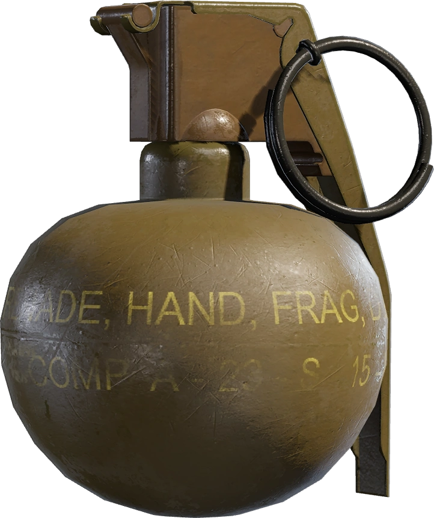
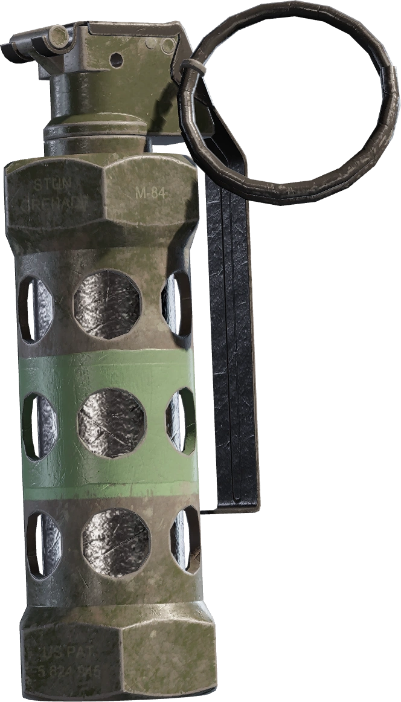
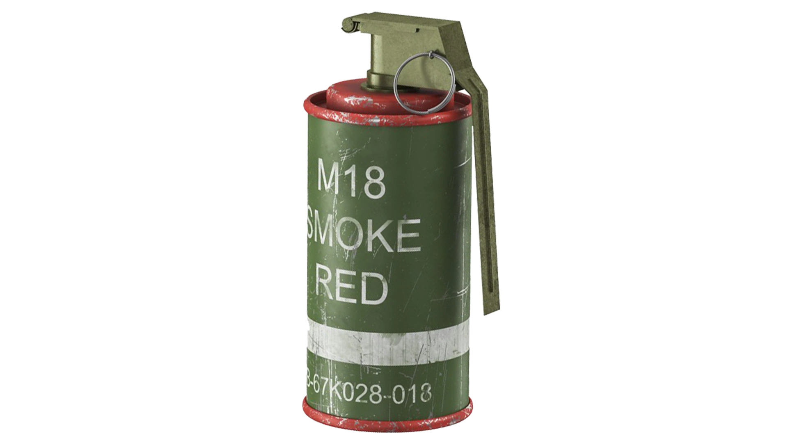

Naast de wapens en unieke gadgets van de Operators speelt de uitrusting — oftewel de items — een essentiële rol in het tactische arsenaal van Rainbow Six Siege. Voordat een ronde van start gaat, kun je kiezen uit diverse secundaire gadgets die je tactische opties flink uitbreiden. Voor Aanvallers behoren items zoals flashbangs, rookgranaten en breach charges tot de vaste standaard. Met een rookgraat kun je bijvoorbeeld het zicht van de vijand blokkeren om veilig een ruimte binnen te stormen, terwijl een claymore-mijn vijanden straft die onverwachts achter je proberen te komen. Ook de standaard introductie van harde brengers of de observatiedrones zijn onmisbaar om veilig terrein te winnen.



Voor Verdedigers ligt de focus meer op het vertragen en ontregelen van de aanvallende partij. Denk hierbij aan prikkeldraad om de opmars van de vijand te vertragen en hoorbaar te maken, inzetbare schilden om dekking te creëren in open gangen, of slag- en stootladingen om snelle rotaties door muren mogelijk te maken. Daarnaast spelen camera's en observatie-apparatuur een grote rol om altijd te weten waar de vijand zich ophoudt. Naast deze actieve gadgets kun je de visuele stijl van je items en wapens aanpassen met weapon skins, charms (hangertjes) en uniformen. Hiermee geef je jouw favoriete Operators een unieke uitstraling. Het juiste item op het juiste moment gebruiken kan het verschil betekenen tussen een glorieuze overwinning en een snelle nederlaag.